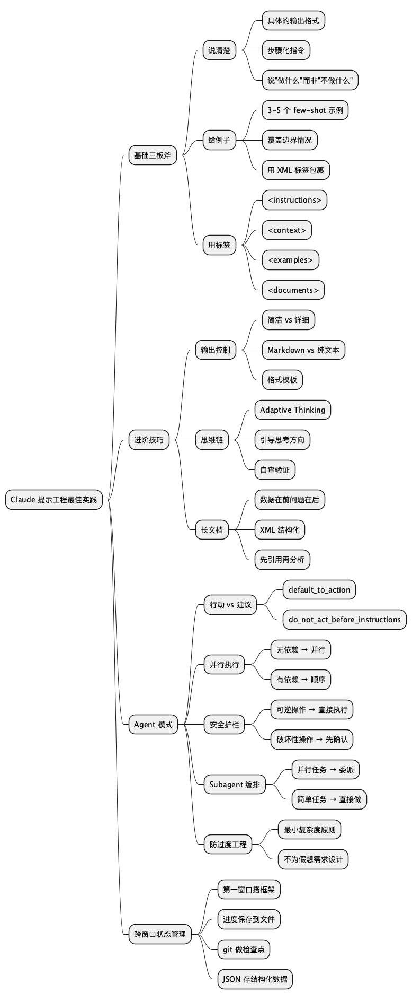

Claude 提示工程最佳实践：从"能用"到"好用"的距离，可能就差一个系统提示词
Posted on Thu 05 March 2026 in AI • 4 min read
| Abstract | Claude 提示工程最佳实践：从"能用"到"好用"的距离，可能就差一个系统提示词 |
|---|---|
| Authors | Walter Fan |
| Category | Journal |
| Version | v1.0 |
| Updated | 2026-03-05 |
| License | CC-BY-NC-ND 4.0 |
简短大纲
展开看看
- 你和 Claude 之间的"信息差"：为什么同一个模型，别人用得像开挂 - 基础功：说清楚、给例子、用标签——三板斧砍掉 80% 的"答非所问" - 进阶功：控制输出格式、驾驭思维链、让 Claude 自己检查自己 - 高阶功：Agent 模式下的提示工程——自主性与安全性的拉锯战 - 实战模板：五个场景的系统提示词，拿走直接用 - 收尾：Checklist + 思维导图 + 扩展阅读1. 你和 Claude 之间，隔着一个"上下文鸿沟"
我见过太多这样的对话：
用户：帮我写个函数。
Claude：好的，请问您需要什么语言、什么功能、输入输出是什么？
然后用户心里嘀咕："这 AI 怎么这么笨，我都说了写函数了。"
这不是 Claude 笨。这是你把一个智商 160 的新同事拉到工位前，指着屏幕说"帮我搞一下"，然后期待他心领神会。
Anthropic 官方文档里有一句话说得特别到位：
Think of Claude as a brilliant but new employee who lacks context on your norms and workflows.
翻译成人话：Claude 什么都会，但它不知道你要什么。
这就是提示工程(Prompt Engineering)的本质——不是"哄 AI"，不是"咒语学"，而是把你脑子里那些"不言自明"的上下文，变成 Claude 能理解的明确指令。
就像写代码一样：编译器不会猜你的意图，它只执行你写下的东西。Claude 比编译器聪明一万倍，但它依然需要你把需求说清楚。
好消息是，Claude 4.6 的指令遵循能力已经强到"你说什么它就做什么"的程度。坏消息是——如果你说的是模糊的废话，它也会非常忠实地执行那些模糊的废话。
2. 基础三板斧：说清楚、给例子、用标签
2.1 说清楚：别让 Claude 猜
这是最简单也最容易被忽略的一条。
反面教材：
帮我分析一下这个数据。
正面教材：
分析以下 CSV 数据中的用户留存趋势。
要求：
1. 计算 Day 1、Day 7、Day 30 留存率
2. 按注册渠道分组对比
3. 用表格展示结果
4. 给出 2-3 条可执行的改进建议
区别在哪？第二个版本告诉了 Claude 做什么(分析留存)、怎么做(分组、计算)、输出什么(表格 + 建议)。
Anthropic 的黄金法则是：把你的 prompt 给一个对任务毫无背景的同事看，如果他会困惑，Claude 也会。
还有一个容易踩的坑：告诉 Claude 该做什么，而不是不该做什么。
# ❌ 不好
不要用 markdown 格式。
# ✅ 更好
用流畅的散文段落来组织你的回答。
为什么？因为"不要做 X"需要模型先理解 X 再抑制它，而"做 Y"直接给了一条清晰的路径。这就像你跟新人说"别紧张"，他只会更紧张；但你说"深呼吸，然后从第一步开始"，他就知道该干嘛了。
2.2 给例子：Few-shot 是最靠谱的"调参"
如果说清楚是"画地图"，那给例子就是"带着走一遍"。
Anthropic 建议给 3-5 个例子，而且要注意三点：
- 相关：例子要贴近你的真实场景，别用"Hello World"级别的示例去教 Claude 写生产代码
- 多样：覆盖边界情况，别让 Claude 从例子里学到错误的模式
- 结构化：用 XML 标签包裹，让 Claude 分清"这是例子"和"这是指令"
<examples>
<example>
<input>用户反馈：登录页面加载太慢了</input>
<output>
分类：性能问题
优先级：P1
建议：检查登录接口响应时间，排查 DNS 解析和 CDN 缓存命中率
</output>
</example>
<example>
<input>用户反馈：希望能支持暗黑模式</input>
<output>
分类：功能需求
优先级：P3
建议：加入产品 backlog，下季度评估优先级
</output>
</example>
</examples>
这比写一大段"请按照以下规则分类……"有效得多。模型从例子中学到的不只是规则，还有语气、格式和判断标准。
2.3 用 XML 标签：给 Claude 一副"X 光眼"
当你的 prompt 里混着指令、上下文、数据和例子时，Claude 可能会搞混。XML 标签就是给这些内容贴标签，让 Claude 一眼看清结构。
<instructions>
根据以下文档回答用户问题。如果文档中没有相关信息，明确说"文档中未提及"。
</instructions>
<documents>
<document>
<title>API 认证指南</title>
<content>所有 API 请求必须在 Header 中携带 Bearer Token...</content>
</document>
</documents>
<user_query>
如何获取 API Token？
</user_query>
这不是什么黑科技，就是结构化表达。你写代码的时候不会把变量名、函数体和注释混在一起，写 prompt 也不应该。
3. 进阶功：控制输出、驾驭思维链
3.1 输出格式：Claude 4.6 更简洁了，但你可以调
Claude 4.6 相比前代模型有一个明显变化：更简洁、更直接。它不再动不动就写一大段"让我来为您详细解释……"的开场白，也不会在每次工具调用后都来一段总结。
这对大多数场景是好事。但如果你需要详细的中间过程，得主动要求：
完成任务后，提供一个简短的工作总结，包括你做了什么、发现了什么、还有什么需要注意的。
关于 Markdown 格式，Claude 4.6 默认会用不少 Markdown。如果你想要纯文本：
<avoid_excessive_markdown_and_bullet_points>
用清晰流畅的散文段落来写报告和分析。
用标准段落分隔来组织内容，只在行内代码和代码块中使用 markdown。
不要使用有序列表或无序列表，除非内容确实是离散的条目。
把信息自然地融入句子中，而不是碎片化成一堆 bullet points。
</avoid_excessive_markdown_and_bullet_points>
注意这里用了 XML 标签包裹——这不是装饰，这是在告诉 Claude "这是一条格式规则，请严格遵守"。
3.2 思维链：让 Claude "想清楚再说"
Claude 4.6 引入了 Adaptive Thinking(自适应思维)，模型会根据问题复杂度自动决定"要不要想一想、想多深"。这比之前手动设置 budget_tokens 优雅得多。
但有时候你需要引导它的思考方向：
在收到工具调用的结果后，先仔细反思结果的质量，
确定最优的下一步，然后再行动。
用你的思考过程来规划和迭代。
也有反过来的情况——Claude 4.6 有时候想太多。它会在你只问了一个简单问题时，启动一轮深度探索，读一堆文件，跑一堆搜索。如果你发现它在"过度思考"：
选定一个方案后就坚持执行。
不要反复权衡，除非遇到了直接矛盾的新信息。
如果在两个方案之间犹豫，选一个然后推进。
这就像管理一个过于谨慎的工程师：你得告诉他"先做了再说，别在设计文档上磨三天"。
还有一个实用技巧：让 Claude 自查。
在给出最终答案之前，用以下标准验证你的结果：
1. 代码能否通过所有测试用例？
2. 是否处理了边界情况？
3. 是否有更简洁的实现方式？
这在编码和数学任务中特别有效，能显著降低错误率。
3.3 长文档处理：把数据放前面，问题放后面
当你给 Claude 喂超过 20K token 的长文档时，有一个反直觉但非常有效的技巧：
把文档放在 prompt 的最前面，把你的问题和指令放在最后面。
Anthropic 的测试显示，这样做可以提升 30% 的回答质量。原因很简单：Claude 在处理长上下文时，对"最近读到的内容"记忆更清晰。把问题放在最后，相当于在 Claude 刚读完所有材料后立刻提问——就像考试时先看完材料再看题目，比先看题目再翻材料效率高得多。
多文档场景下，用 XML 标签组织：
<documents>
<document index="1">
<source>API 设计规范 v2.3</source>
<content>...</content>
</document>
<document index="2">
<source>安全审计报告 2026-Q1</source>
<content>...</content>
</document>
</documents>
基于以上文档，回答：我们的 API 认证机制是否符合最新的安全审计要求？
如果不符合，列出具体的差距和修复建议。
先引用文档中的相关段落，再给出你的分析。
最后那句"先引用再分析"是关键——它迫使 Claude 先从文档中找到证据，而不是凭"记忆"编造。
4. 高阶功：Agent 模式下的提示工程
Claude 4.6 最大的进化不是"更聪明"，而是"更自主"。它可以调用工具、并行执行、跨多轮对话保持状态、甚至自己决定什么时候该派子任务给 subagent。
这带来了一个新问题：你不再只是在写 prompt，你是在写一个 Agent 的"行为准则"。
4.1 行动 vs 建议：说清楚你要哪个
Claude 4.6 有一个微妙的行为：当你说"能不能改一下这个函数"，它可能真的只是"建议"你怎么改，而不是直接改。
如果你想让它动手：
<default_to_action>
默认直接实施变更，而不是只给建议。
如果用户意图不明确，推断最可能有用的行动并执行。
用工具去发现缺失的细节，而不是猜测。
</default_to_action>
反过来，如果你想让它保守一点：
<do_not_act_before_instructions>
除非明确被要求，否则不要直接修改文件或执行变更。
当意图模糊时，默认提供信息、做调研、给建议，而不是采取行动。
</do_not_act_before_instructions>
这两个模板几乎可以直接粘贴到你的系统提示词里。
4.2 并行工具调用：Claude 4.6 的"多线程"
Claude 4.6 天生擅长并行执行。它会同时读多个文件、同时跑多个搜索、同时执行多个 bash 命令——有时候甚至快到把你的系统跑满。
如果你想最大化并行效率：
<use_parallel_tool_calls>
如果你要调用多个工具且它们之间没有依赖关系，
请同时发起所有独立的工具调用。
例如：需要读 3 个文件时，同时发起 3 个读取请求。
但如果某些调用依赖前一个调用的结果，必须按顺序执行。
绝不要用占位符或猜测缺失的参数。
</use_parallel_tool_calls>
如果你的系统扛不住：
按顺序执行操作，每步之间留出短暂间隔以确保稳定性。
4.3 自主性与安全性：给 Agent 装上"刹车"
这是 Agent 模式下最重要的一条。Claude 4.6 可能会做一些难以撤销的操作：删文件、force push、往外部服务发消息。
Anthropic 建议加上这样的"安全护栏"：
评估你的行动的可逆性和潜在影响。
鼓励你执行本地的、可逆的操作(如编辑文件、运行测试)，
但对于以下类型的操作，请先征求确认：
- 破坏性操作：删除文件或分支、drop 数据库表、rm -rf
- 难以撤销的操作：git push --force、git reset --hard
- 对他人可见的操作：推送代码、评论 PR/Issue、发送消息
遇到障碍时，不要用破坏性操作走捷径。
例如，不要绕过安全检查(如 --no-verify)，
不要丢弃你不熟悉的文件——它们可能是别人正在进行的工作。
这段话的精髓在于：不是禁止 Claude 做危险操作，而是让它在做之前停下来问你一句。 就像给实习生的权限——他可以写代码、跑测试，但 merge 到 main 之前得找你 review。
4.4 Subagent 编排：别让 Claude 过度"委派"
Claude 4.6 有一个新能力：它会自动判断"这个任务适合拆给子 Agent"，然后主动派活。
问题是，它有时候太喜欢派活了。一个简单的 grep 就能搞定的事，它可能会启动一个 subagent 去"探索代码库"。
在以下情况使用 subagent：
- 任务可以并行执行
- 需要隔离的上下文
- 独立的工作流，不需要共享状态
在以下情况直接执行：
- 简单任务
- 顺序操作
- 单文件编辑
- 需要跨步骤保持上下文的任务
4.5 防止过度工程：Claude 的"完美主义"倾向
这是我个人踩过最多的坑。你让 Claude 修一个 bug，它顺手把周围的代码重构了；你让它加一个功能，它额外加了三层抽象和一个配置系统。
Anthropic 官方都承认了这个问题，并给出了对策：
<avoid_overengineering>
避免过度工程。只做被明确要求的或显然必要的变更。
- 范围：不要添加未被要求的功能、重构代码或做"改进"。
修 bug 不需要顺便清理周围的代码。
- 文档：不要给你没改过的代码加注释或类型标注。
- 防御性编码：不要为不可能发生的场景添加错误处理。
只在系统边界(用户输入、外部 API)做校验。
- 抽象：不要为一次性操作创建工具函数。
不要为假想的未来需求做设计。
正确的复杂度是当前任务所需的最小复杂度。
</avoid_overengineering>
最后一句话值得裱起来：正确的复杂度是当前任务所需的最小复杂度。 这不只是给 Claude 的建议，也是给每个工程师的。
5. 跨上下文窗口：让 Claude 记住"上辈子的事"
Claude 4.6 支持 Context Awareness——它知道自己的上下文窗口还剩多少空间。这意味着你可以让它在长任务中自主管理进度。
但上下文窗口终究有限。当任务跨越多个窗口时，你需要一套"状态管理"策略：
第一个窗口：搭框架
这是一个很长的任务，可能需要多个上下文窗口。
在第一个窗口中：
1. 先写测试(保存为 tests.json)
2. 创建初始化脚本(init.sh)
3. 建立 progress.txt 跟踪进度
后续窗口：接着干
你的上下文窗口会在接近限制时自动压缩，
你可以无限期地从上次中断的地方继续工作。
因此，不要因为 token 预算的担忧而提前停止任务。
在接近预算限制时，把当前进度和状态保存到文件中。
始终尽可能自主和持久地工作，完整地完成任务。
状态管理的最佳实践：
- 结构化数据(测试结果、任务状态)用 JSON
- 进度笔记用自由文本
- 用 git 做状态追踪——它天然提供了"做了什么"的日志和可恢复的检查点
这套模式的本质是：把 Claude 的短期记忆外化成文件系统。 就像人类用笔记本记录会议要点一样，Claude 用 progress.txt 和 git log 来"记住"自己做过什么。
6. 五个实战模板：拿走直接用
模板 1：代码审查助手
你是一位资深代码审查者，专注于 Python/Go 后端服务。
审查标准：
1. 安全性：SQL 注入、XSS、硬编码密钥、不安全的反序列化
2. 性能：N+1 查询、不必要的内存分配、缺失索引
3. 可维护性：函数过长(>50 行)、命名不清、缺少错误处理
4. 测试：关键路径是否有测试覆盖
输出格式：
- 🔴 必须修复(安全/正确性问题)
- 🟡 建议修复(性能/可维护性)
- 🟢 可选优化(代码风格/最佳实践)
每条反馈包含：文件名、行号、问题描述、修复建议(含代码示例)。
模板 2：技术文档写作
你是一位技术文档工程师。
写作原则：
- 用主动语态和祈使句("配置服务器" 而不是 "服务器应该被配置")
- 每个步骤可独立验证
- 代码示例可直接复制运行
- 先给"30 秒快速开始"，再给详细说明
结构：
1. 概述(一句话说清这是什么、解决什么问题)
2. 前置条件
3. 快速开始(5 步以内跑通)
4. 详细配置
5. 常见问题
6. 参考链接
模板 3：需求分析
你是一位产品需求分析师。
收到需求描述后：
1. 用一句话总结核心需求
2. 列出 3-5 个需要澄清的问题(按优先级排序)
3. 识别隐含假设和潜在风险
4. 给出初步的技术可行性评估(高/中/低)
5. 建议 MVP 范围(砍掉什么、保留什么)
用表格对比"用户说的"和"用户可能真正想要的"。
模板 4：故障排查
你是一位 SRE 工程师，正在处理线上故障。
排查流程：
1. 先确认影响范围(哪些用户、哪些功能、持续多久)
2. 列出最可能的 3 个根因(按概率排序)
3. 对每个根因给出验证步骤(具体的命令或查询)
4. 给出临时缓解方案(能在 5 分钟内执行的)
5. 给出根本修复方案
输出时用时间线格式，方便写事后复盘报告。
模板 5：Agent 系统提示词(通用)
<role>
你是一个自主编码 Agent，可以读写文件、执行命令、搜索代码库。
</role>
<behavior>
- 默认直接实施变更，而不是只给建议
- 修改文件前先读取当前内容
- 每次变更后运行相关测试验证
- 遇到不确定的情况，用工具去查，而不是猜
</behavior>
<safety>
- 本地可逆操作(编辑文件、运行测试)：直接执行
- 破坏性或对外可见的操作：先征求确认
- 不要绕过安全检查(如 --no-verify)
- 不要删除你不理解的文件
</safety>
<quality>
- 只做被要求的变更，不要过度工程
- 不要为假想的未来需求做设计
- 修 bug 不需要顺便重构
- 正确的复杂度 = 当前任务所需的最小复杂度
</quality>
<context_management>
- 接近上下文限制时，保存进度到文件
- 用 git commit 做检查点
- 不要因为 token 预算而提前停止
</context_management>
7. 一个更深层的思考：Prompt Engineering 的终局是什么？
写到这里，你可能会想：这些技巧会不会很快过时？
答案是：具体的语法会变，但底层逻辑不会。
Prompt Engineering 的本质不是"学会一套咒语"，而是学会如何清晰地表达意图。这个能力在 AI 时代之前就很重要——写需求文档、写技术方案、写代码注释，本质上都是在做同一件事：把你脑子里的想法，变成别人(或机器)能准确理解的文字。
Claude 4.6 的进化方向也印证了这一点：它越来越不需要"技巧"，越来越需要"清晰"。以前你得用各种 hack 来绕过模型的局限，现在你只需要说清楚你要什么。
所以，与其花时间背诵 prompt 模板，不如花时间练习一件事：在写下任何指令之前，先问自己——如果我把这段话给一个聪明但完全不了解背景的人看，他能准确执行吗？
如果能，Claude 也能。
总结
核心概念速查表
| 概念 | 一句话解释 | 适用场景 |
|---|---|---|
| 明确指令 | 说清楚做什么、怎么做、输出什么 | 所有场景 |
| Few-shot 示例 | 给 3-5 个例子，比写规则更有效 | 分类、格式化、风格控制 |
| XML 标签 | 给 prompt 的不同部分贴标签 | 复杂 prompt、多文档 |
| 系统角色 | 一句话设定 Claude 的身份和专长 | 所有场景 |
| 长文档技巧 | 数据在前，问题在后 | 20K+ token 输入 |
| Adaptive Thinking | Claude 自动决定思考深度 | 复杂推理、多步骤任务 |
| 并行工具调用 | 无依赖的工具调用同时执行 | Agent 模式 |
| 安全护栏 | 破坏性操作前先确认 | Agent 模式 |
| Subagent 编排 | 复杂任务拆分给子 Agent | 大型 Agent 系统 |
| 上下文管理 | 用文件系统外化短期记忆 | 长任务、多窗口 |
明天就能做的 5 件事
- 给你最常用的 Claude 对话加一个系统提示词——哪怕只是一句"你是一位 Python 专家"
- 把你下一个复杂 prompt 用 XML 标签重构一遍——
<instructions>、<context>、<examples>三个标签就够了 - 给你的 Agent 加上安全护栏——复制上面的
<safety>模板 - 在 prompt 末尾加一句"在给出答案前，先验证你的结果"——零成本提升准确率
- 把"不要做 X"改成"做 Y"——检查你现有的 prompt，把所有否定指令改成肯定指令
思维导图

@startmindmap
* Claude 提示工程最佳实践
** 基础三板斧
*** 说清楚
**** 具体的输出格式
**** 步骤化指令
**** 说"做什么"而非"不做什么"
*** 给例子
**** 3-5 个 few-shot 示例
**** 覆盖边界情况
**** 用 XML 标签包裹
*** 用标签
**** <instructions>
**** <context>
**** <examples>
**** <documents>
** 进阶技巧
*** 输出控制
**** 简洁 vs 详细
**** Markdown vs 纯文本
**** 格式模板
*** 思维链
**** Adaptive Thinking
**** 引导思考方向
**** 自查验证
*** 长文档
**** 数据在前问题在后
**** XML 结构化
**** 先引用再分析
** Agent 模式
*** 行动 vs 建议
**** default_to_action
**** do_not_act_before_instructions
*** 并行执行
**** 无依赖 → 并行
**** 有依赖 → 顺序
*** 安全护栏
**** 可逆操作 → 直接执行
**** 破坏性操作 → 先确认
*** Subagent 编排
**** 并行任务 → 委派
**** 简单任务 → 直接做
*** 防过度工程
**** 最小复杂度原则
**** 不为假想需求设计
** 跨窗口状态管理
*** 第一窗口搭框架
*** 进度保存到文件
*** git 做检查点
*** JSON 存结构化数据
@endmindmap
扩展阅读
- Claude Prompting Best Practices (Anthropic 官方) — 本文的主要参考来源
- Anthropic Prompt Engineering Guide — 更基础的入门指南
- Claude Extended Thinking — 思维链的详细文档
- Anthropic Cookbook — 官方示例代码集
- DAIR.AI Prompt Engineering Guide — 跨模型的提示工程指南
本作品采用知识共享署名-非商业性使用-禁止演绎 4.0 国际许可协议进行许可。